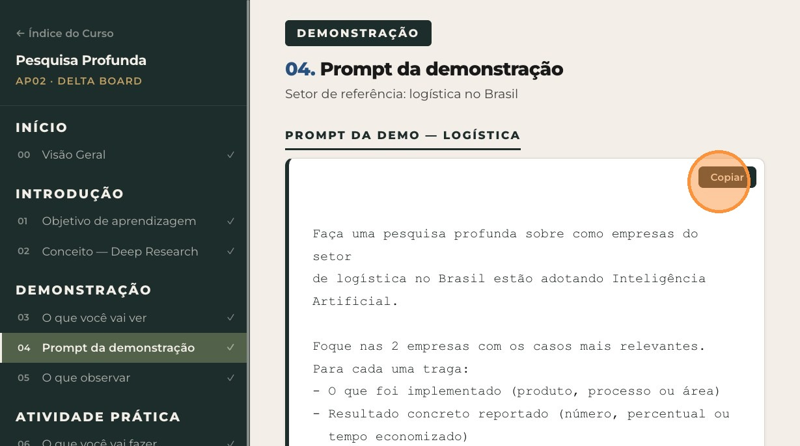
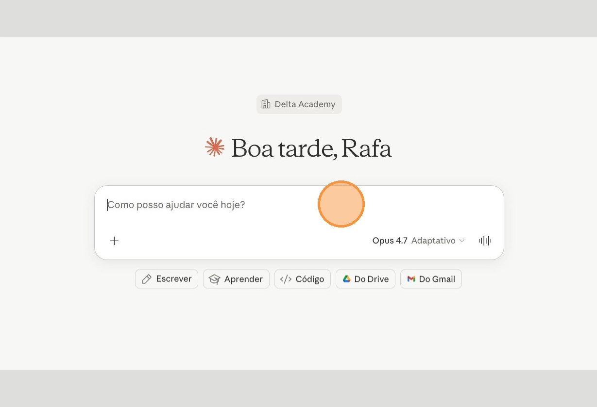
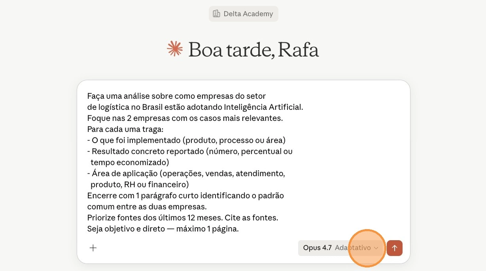
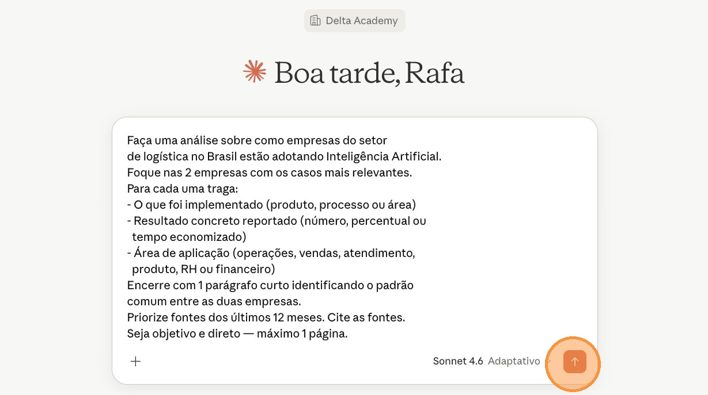
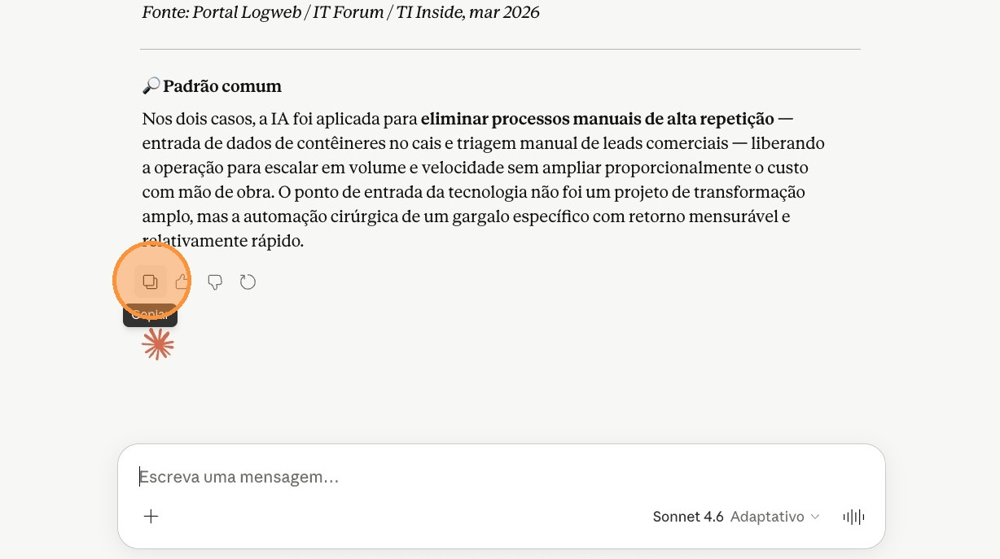

Segunda atividade do bloco Como usar AI. Você vai usar o Deep Research do Claude para mapear como concorrentes do seu segmento estão adotando AI — transformando isso em inteligência estratégica para a sua empresa.
Ficha técnica
| Tipo | Demonstração + Atividade Prática |
| Duração | 20 minutos |
| Técnica de AI | Deep Research (pesquisa agêntica) |
| Ferramenta | Claude (Deep Research nativo) |
| Modelo | Sonnet 4.6 |
Usar o Deep Research do Claude para mapear como os concorrentes do seu segmento de mercado estão adotando AI e quais resultados concretos já conseguiram — transformando isso em inteligência estratégica para a sua empresa.
Uma busca comum no Google (ou um prompt simples num LLM) entrega links e fragmentos. O Deep Research faz algo diferente: o Claude navega autonomamente por dezenas de fontes, lê, cruza e sintetiza tudo num relatório estruturado — como se um analista júnior tivesse pesquisado por 3 horas e te entregado um briefing executivo pronto.
O resultado não é uma lista de links. É um documento com contexto, comparações e conclusões — pronto para levar para uma reunião de board.
O professor acessa o Claude, ativa o modo Deep Research e roda o prompt da próxima seção sobre o setor de logística. Enquanto o Deep Research processa, observe o que acontece nos bastidores: o Claude está abrindo fontes, lendo artigos, cruzando dados e montando o relatório de forma autônoma — sem nenhuma intervenção manual.
Quando o relatório chegar, observe a estrutura do output: quais empresas foram mapeadas, que resultados apareceram e como o Claude organizou as informações. O ponto central desta demo é a diferença de profundidade entre o que um prompt simples entregaria e o que o Deep Research entrega.
- Não é busca, é pesquisa. O Claude abre e lê múltiplas fontes de forma autônoma — observe o painel lateral mostrando as buscas em andamento.
- Output estruturado. O relatório chega organizado, com empresas nomeadas e resultados reais citados com fonte.
- Inteligência estratégica. O parágrafo final já é análise — não dados brutos. É o tipo de leitura que vai para uma reunião de board.
- Tempo é o custo da profundidade. O processamento (até 5 min) é o trade-off: você espera uma vez, usa o relatório por meses.
Copiar o prompt direto desta página, colar no Claude com o modo Deep Research ativado, ajustar o segmento de mercado para o da sua empresa e acompanhar o relatório sendo gerado. Ao final, salvar o output — você vai usar como documento na próxima atividade prática (AP03 — Projects).
Vá até a seção 08. Prompt para você usar e clique no botão Copiar no canto superior direito do bloco. O prompt vai para a sua área de transferência.

Passo 01 — Clique no botão Copiar do bloco de prompt
Abra uma nova aba do navegador e acesse claude.ai.
Clique no campo de mensagem do Claude e cole o prompt copiado (Cmd+V no Mac ou Ctrl+V no Windows).

Passo 03 — Cole o prompt no Claude
No prompt colado, substitua [SEU SEGMENTO DE MERCADO] pelo segmento em que sua empresa atua. Exemplos: varejo, serviços financeiros, saúde, logística ferroviária.

Passo 04 — Edite o placeholder do prompt
No canto inferior do campo de mensagem, abra o seletor de modelo e escolha Sonnet 4.6. Esse é o modelo recomendado para Deep Research — equilibra qualidade e velocidade.

Passo 05 — Selecione Sonnet 4.6 no seletor de modelo
Confirme que o modo Deep Research está ativado e clique no botão de envio para iniciar a pesquisa.

Passo 06 — Clique no botão de envio
O processamento leva até 5 minutos. Acompanhe o que o Claude está fazendo nos bastidores: abrindo fontes, lendo artigos, cruzando dados e montando o relatório.
Quando o relatório estiver pronto, clique no botão Copiar abaixo da resposta do Claude para salvar o conteúdo gerado.

Passo 08 — Copie o relatório final
Se você trabalha em segmento muito específico, generalize um nível. Ex.: "gestão de frotas offshore" → "logística marítima" ou "oil & gas Brasil".
Cole o relatório completo em um Google Doc, Notion ou arquivo de texto antes de avançar.
Checklist de fechamento
- Salve o relatório completo em um documento (Google Doc, Notion ou .txt)
- Identifique pelo menos 1 empresa do seu segmento que já está usando AI com resultado comprovado
- Guarde o relatório — ele vira documento fonte da AP03 (Projects)
O Deep Research sozinho já é diferencial competitivo. Ainda assim é só a matéria-prima — na próxima aula você transforma esse relatório em um assistente personalizado com Projects.